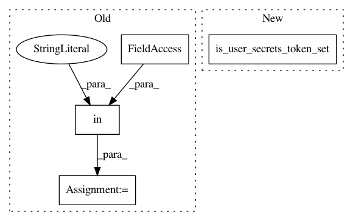

b9bd8f03020d330b5be889e8e0759390ad357a57,patches/kaggle_gcp.py,,init_automl,#,222
Before Change
return storage
def init_automl():
is_user_secrets_token_set = "KAGGLE_USER_SECRETS_TOKEN" in os.environ
from google.cloud import automl, automl_v1beta1
if not is_user_secrets_token_set:
return
After Change
def init_automl():
from google.cloud import automl, automl_v1beta1
if not is_user_secrets_token_set():
return
from kaggle_gcp import get_integrations
In pattern: SUPERPATTERN
Frequency: 3
Non-data size: 4
Instances
Project Name: Kaggle/docker-python
Commit Name: b9bd8f03020d330b5be889e8e0759390ad357a57
Time: 2021-01-06
Author: 38956225+kornelregius@users.noreply.github.com
File Name: patches/kaggle_gcp.py
Class Name:
Method Name: init_automl
Project Name: Kaggle/docker-python
Commit Name: b9bd8f03020d330b5be889e8e0759390ad357a57
Time: 2021-01-06
Author: 38956225+kornelregius@users.noreply.github.com
File Name: patches/kaggle_gcp.py
Class Name:
Method Name: init_bigquery
Project Name: Kaggle/docker-python
Commit Name: b9bd8f03020d330b5be889e8e0759390ad357a57
Time: 2021-01-06
Author: 38956225+kornelregius@users.noreply.github.com
File Name: patches/kaggle_gcp.py
Class Name:
Method Name: init_gcs